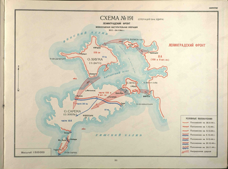

Введение
С завершением освобождения материковой части Эстонии Ставка ВГК 25 сентября поставила Ленинградскому фронту и Краснознаменному Балтийскому флоту задачу изгнать противника с островов Моонзундского архипелага и лишить вражескую группу армий «Север» морского пути из Рижского залива через Ирбенский пролив.
Для проведения Моонзундской десантной операции по решению командующего Ленинградским фронтом были выделены из 8-й армии 109-й стрелковый корпус под командованием генерал-лейтенанта И. П. Алферьева и 8-й эстонский корпус под командованием генерал-лейтенанта Л. А. Пэрна. Из сил Балтийского флота в операции участвовали 1-я бригада торпедных катеров и 260-я бригада морской пехоты.
Боевые действия по освобождению островов Моонзундского архипелага начались сразу же после выхода наших войск на западное побережье Эстонии. 27 сентября 1-я бригада торпедных катеров высадила на остров Вормси десант из состава 260-й бригады морской пехоты. Поддержанный огнем кораблей и войсковой артиллерии с побережья Эстонии, десант сломил сопротивление противника и к исходу дня полностью очистил остров от вражеских войск.
Вслед за островом Вормси в течение 29–30 сентября был очищен остров Муху (Моон). В освобождении его участвовала 249-я эстонская стрелковая дивизия, десантирование которой осуществлялось 12 торпедными катерами и 90 автомобилями-амфибиями.
2 октября началась высадка десантов на остров Хиума (Даго) из состава 109-й стрелковой дивизии под командованием генерал-майора Н. А. Трушкина. Части дивизии быстро разгромили вражеский гарнизон из трех отдельных батальонов и 3 октября полностью очистили остров. В руках противника оставался лишь один остров Сааремаа (Эзель), самый крупный и наиболее важный в военном отношении, так как он контролировал выход из Рижского залива через Ирбенский пролив. На острове было сосредоточено до двух дивизий вражеских войск.
Для освобождения острова Сааремаа командующий 8-й армией выделил 8-й эстонский стрелковый корпус (7-ю и 249-ю дивизии) и 131-ю стрелковую дивизию 109-го стрелкового корпуса. После тщательной подготовки 5 октября началась высадка десантов. Два полка 131-й стрелковой дивизии под командованием генерал-майора П. А. Романенко были посажены на корабли в порту Хаапсалу и высажены на северном берегу острова. Сюда же высадился и третий полк дивизии с острова Хиума (Даго). Соединения 8-го эстонского корпуса десантировались с острова Муху (Моон) через узкий пролив на восточный берег острова Сааремаа.
В ожесточенных боях советские войска к 9 октября очистили от противника почти весь остров. Немцы, отойдя на узкий, тщательно подготовленный к обороне полуостров Сырве, оказали упорное сопротивление нашим войскам. Бои за полуостров Сырве были завершены 24 ноября.
[5, стр. 65-67]
